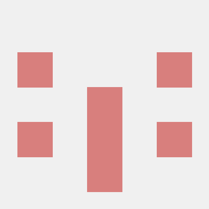

PERSONAL WEBSITE
Hello,
web.
안녕하세요, hkk입니다.
Python으로 자료구조와 알고리즘을 구현하고,
웹과 데이터베이스, Linux의 기본을 익히고
있습니다.
01 — ABOUT

작동하는 코드에서, 동작하는 원리까지.
Codyssey 과제를 수행하며 배운 내용을 GitHub에 기록하고 있습니다. Mini Git과 Mini Redis로 알고리즘과 자료구조를 구현하고, 가계부 CLI와 SQLite 데이터베이스, Linux 서버 운영 실습으로 학습 범위를 넓혀가고 있습니다.
02 — SKILLS
실제로 만들며 학습하고 있습니다.
가계부와 Mini Git, Mini Redis를 직접 구현합니다.
CLI · Data Structures · Algorithms반응형 화면과 사용자 인터랙션, API 연동을 배웁니다.
Semantic HTML · Grid · DOM도서 대여 데이터의 구조를 설계하고 쿼리를 작성합니다.
Tables · Queries · Data Modeling서버 상태를 기록하고 코드의 변경 이력을 관리합니다.
Bash · cron · GitHub03 — PROJECTS
웹부터 자료구조, 데이터베이스, 서버 운영까지. 직접 구현한 학습 프로젝트를 소개합니다.
Hello,
web.
04 — CONTACT
학습 프로젝트가 궁금하다면
GitHub에서 코드와 기록을 살펴보세요.
이 폼은 입력 검증을 체험하는 데모입니다.
메시지가 실제로 전송되지는 않습니다.